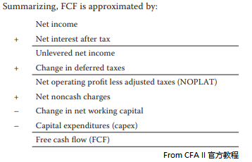

--------------------
Mergers and Acquisitions
--------------------
- concepts
- Mergers and Acquisitions 的区别
- Mergers全买, 也叫takeover
- Acquisitions买一部分
- 对手方
- target T
- acquiror A
- post-merger A*
- merger分类
- by the form of integration
- statutory merger 吸收合并, A + T -> A*, 包括Assets and Liabilities
- subsidiary merger, A将T收购为子公司, 常见于T由strong brand 或 good image时
- consolidation, A + B -> C
- by T mind-set
- friendly merger 善意收购
- hostile merger 恶意收购
- by business relationship
- horizontal merger 水平并购, 同业竞争者之间, 实现规模效应, 一般不会消除竞争风险(波特五力模型)
- vertical merger, 垂直收购, 上下游之间
- forward integration 前向整合, 上游并购下游
- backward integratio 反向整合, 下游并购上游
- conglomerate merger, 收购不相关的公司, 目的是分散化, 降低收入波动
- 动机
- synergy 协同, 仅在水平收购和垂直收购中出现, 实现1+1>2
- cost synergy, 规模经济实现成本协同
- revenue synergy, 通过 cross-selling 或 竞争的减少 从而提高利润
- growth
- organic growth, 有机成长, 投资内部项目, 一般有阶梯发展
- external growth, 投资外部项目, 风险小
- increasing market power
- acquiring unique capabilities and resources, 获取特定能力/资源/许可
- diversification
- bootstrapping earnings
- 高P/E的公司收购低P/E的公司, 提高EPS, 实际是T的单位股价的收益更高
- 不会提高实际收入, 只是财报更好看
- 实际新股价 PA* = P/EA × EPSA
- 高管的私人激励, 不是股东利益, 扩张提高了高管的compensation, 和个人社会地位self-aggrandizement
- 避税, A可以通过合并报表降低 EBT 从而避税
- hidden value, 挖掘T的潜力
- cross-border motivations 跨国动机
- exploiting market imperfections 充分利用市场缺陷, 如廉价劳动力等
- adverse government policy, 克服不利的政府政策
- 技术转移获利
- 产品多样化
- following clients, 跟紧客户
- 行业周期不同阶段中的merger特点
- pioneering development 探索期, 重点是坚持生存, 需要资本或规模经济
- 迅速增长期, 重点是扩张, 需要资本和规模
- 成熟增长期, 重点是提高自身效率, 协同Synergy
- 稳定期市场成熟, 重点是竞争
- 水平收购, 规模经济
- boot strapping, 大吃小
- 衰退期, 重点是存活
- 水平收购 | 垂直收购, 在本行业存活
- conglomerate, 收购别人, 新的增长点
- 收购形式
- stock purchase
- 支付对手是T的股东
- 股东承担资本利得税
- A承担负债
- asset purchase
- 支付对手是T公司
- 不需要股东批准
- 公司承担资本利得税
- A不承担负债
- 支付形式
- 现金支付 cash offering
- 证券支付 securities offering
- mixed offering
- 公司选择支付形式的因素
- 支付形式对A和T的risk和reward影响
- A有信心收购之后更好则倾向现金支付
- T有信心收购之后更好则倾向证券支付
- 结果是常常混合支付
- A和T的相对估值
- A相对高估的时候, A证券价格相对较高, A倾向证券支付
- 资本结构
- 现金收购配合债务融资提高杠杆率和risk, 且获得债务利息的税盾
- 证券支付配合发行新股降低杠杆率和risk
- T的心态 mind-set
- friendly mergers
- 最终并购协议 definitive merger agreement, 双方attorneys和交易各方签字
- 代理委托书 proxy statement
- hostile mergers
- A提出接管策略绕过CEO直接向董事会收购, bear hug
- 管理层妥协, 转为善意收购; 或者管理层反对
- A发起要约收购tender offer, 直接收购T股东的股票
- A发起代理权争夺proxy fight, 争夺proxy委托投票权
--------------------
Takeover defense mechanisms
--------------------
- pre-offer
- 毒丸计划 poison pill
- flip-in pill, T原股东有权以折扣价买入T发行的新股
- flip-over pill, T原股东有权以折扣价买入A股份
- dead-hand provision, T的continuing directors有权投票终止毒丸计划
- 毒性卖权 poison puts
- T的债券债权人有权在收购发生时以约定的价格将债券卖回给T
- 在USA限制并购法律的州注册公司
- staggerd 董事会
- 限制投票权, 新股东在持有股票一定时间之后才能投票
- 绝对多数条款 supermajority voting provisions
- 恶意收购触发本条款, T能够修改charter要求绝对多数, 一般为80%, 股东投票允许才能开始收购
- 公允价格修正 fair price amendments
- 金色降落伞 golden parachutes, 董事和高管在被解职时可以收到巨额赔偿金 lucrative payouts
- post-offer
- 'just say no' defense, T高管游说董事会和股东拒绝收购
- 起诉 litigation, allege violations of securities or antitrust laws
- greenmail, 允许T原股东从A溢价回收股份, 并约定A在一定时间内不得再次恶意收购
- share repurchase, T在部分股东同意收购时回购股份以抬高股价, 可以配合债务融资获得资金并提高杠杆率
- 杠杆资本重组 leveraged recapitalization, 通过债务融资回购股份
- crown jewel defense, T卖掉A所期望的资产
- Pac-Man defense, 如果A和T规模接近时, T反向收购A的股份
- 白骑士white knight defense, T找到第三方进行善意收购, 第三方常有Winner's curse
- 白扈从white squire defense, 比白骑士规模小, 有起诉风险, 有的证券交易注册要求T股东投票批准
--------------------
Regulation
--------------------
- antitrust
- HHI = 所有公司市场占有率 × 100 的平方和
- HHI ∈ [0,1000], no action
- HHI ∈ [1000,1000], if △≥100, possible challenge
- HHI ∈ [1800,∞], if △≥50, challenge
- Securities laws - the Williams Action
- 要求披露任何时候A收购大于5%股份
- 建立tender offer process, 设定rules和restrictions必须遵守
- tender offer必须至少20工作日, A必须接受所有tender, 而且必须同价, T股东可以在期内撤回
--------------------
Merger 分析
--------------------
- T估值
- discounted cash flow analysis

- Terminal valueT=FCFT×(1+g)/(WACC-g)
- advantages
- 模型中包括T的CF变化的期望
- 模型提供基于预测基础的本征值的估计
- 假设和估计的变化可以通过自定义和修改模型消除影响
- disadvantages
- 当FCF为负时, 难以应用此方法
- 对CF和利润的估计有主观因素
- 折现率估计随时间变化
- 终值估计依赖很多估计值, 受主观影响大, 而且WACC和g对终值影响很大
- 可比较公司分析法
- 收购溢价 PRM = (收购成交价 DP - 股价 SP) / 股价 SP
- 收购成交价 = 预估股价 × (1 + 收购溢价)
- advantages
- 结果是合理近似
- 数据可得, 估计可以推导, 不需要太多假设和估计
- disadvantages
- 市场价对结果影响大
- 历史溢价可能过时或不准确
- 需要估计合理溢价, 调整股价预期
- T的活动可能导致结果不准
- 可比较交易分析法
- 在可比较公司分析法的基础上, 不以公司为目标, 以选定的交易为目标
- advantages
- 不估计溢价, 估计参数来自选定的真实交易
- 定价有市场参考, 减少起诉风险
- disadvantages
- 假设选定的交易可以准确定价, 实际很困难
- 可选案例少, 有样本偏差
- 选定案例的溢价不能真实反映T的协同效应和资本结构
- bid evaluation 收购竞标价估值
- T的利得 GT = 收购总价 PT - T价值 VT
- A的利得 GA = 协同效应 S - GT
- VA* = VA + VT + 协同效应 S - 现金支付 C
- 受益者
- 一般短期内
- T收到30%左右的溢价
- A有1%-3%的股价下跌
- 现金支付比股票支付有更好的提升
- 高溢价可能导致winner's curse
- A可能过度自傲hubris高估协同效应
- 一般长期内
- 并购成功的因素
- corporate restructuring
- divestiture 拆分
- 常见重组原因
- 战略改变 strategic focus changes
- 配合不良 poor fit
- 反向协同 reverse synergy
- 现金紧缺, 有变现, 融资, CF需求
- 重组的分类
- equity carve-out, 股权分拆上市, 部分股权单独设立法人上市, 有CF流入
- spin-off, 资产分拆, 部分资产单独设立公司, 没有CF流入
- split-off, 资本转换, 易股式重组, 母公司股东将股份转移到子公司, 没有CF流入
- liquidation, 破产清算
--------------------
Next Chaptor